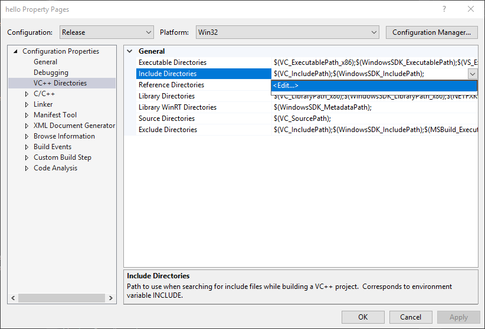

How To Link
Visual Studio
Preparing: Before we start, if are using a library that needs curl, for example cpr, then you need to compile it.
Here what the commands should look like for compiling curl
"C:\Program Files (x86)\Microsoft Visual Studio\2017\Community\VC\Auxiliary\Build\vcvars32.bat"
cd ..\..\sleepy-discord\deps\cpr\opt\curl\winbuild
nmake /f Makefile.vc mode=static VC=14
Here’s a good guide to do just that, but before you read it remember to change things like Microsoft Visual Studio 12.0 or VC=12 or vc12 to Microsoft Visual Studio 14.0 or VC=14 or vc14 or whatever version of Visual Studio. Anyway, here is the guide that I’m talking about. After you have compiled curl, place the include and lib folders into deps.
Step 1: First you need a project, of course. Go make a new one if you haven’t done so already.
Step 2: Right click on your project in the Solution Explorer and go to Properties.

Step 3: On the left, go to VC++ Directories. Click on Include Directories and then click on the arrow on the right, and then click Edit...

Step 4: Click on the white empty box at the top, and then click on the 3 dots on the right.
The box of Include Directories should look something like this, but with the full path
$(projectdir)..\include
$(projectdir)..\deps
$(projectdir)..\deps\include
$(projectdir)..\include\sleepy_discord\IncludeNonexistent
Step 5: Select the folder containing the folder sleepy_discord, and do the same for the dependencies(deps), include dependencies (deps/include), and the \include\sleepy_discord\IncludeNonexistent. Also, it is important to note that the order of these folders matter. The compiler will look at the first path first, and and the 2nd one next, so \include\sleepy_discord\IncludeNonexistent needs to be last. This is so that we don’t get “any include files not found” errors. Anyway, once done, click OK. These folders will be the folders that Visual C++ will look into to find header files for Sleepy_Discord.
The box of Library Directories should look like this, but with full paths
$(projectdir)$(Configuration)
$(projectdir)..\deps\lib
Step 6: Do the same thing for Library Directories, add the folder with Sleepy_Discord and all it’s needed libraries. This tells Visual C++ to search for library files in these folders
Step 7: To tell Visual C++ to link these library, click on the arrow to the left of Linker, and go to Input. Click on Additional Dependencies, and then click on the arrow on the right, and then click Edit…

Here’s a good example of the library files to list
sleepy_discord.lib
libcurl_a.lib
ssleay32MT.lib
libeay32MT.lib
Step 8: On the text box at the top add sleepy_discord.lib then add all the other needed library files you also need. Also, each library file is separated by a new line. Once you’re done, remember to click OK.
(optional) Step 9: Click the arrow to the left of C/C++, and go to Preprocessor. Click on Preprocessor Definitions, and then click Edit…
(optional) Step 10: On the text box at the top add whatever preprocessor definitions, you need. You don’t need any to link Sleepy Discord. This is here just in case, you need it.
Now, It’s Time to Compile
Here’s some example code for you to compile
/*If you are using uWebSockets,
remember to change this to uwebsockets_websocket.h*/
#include "sleepy_discord/websocketpp_websocket.h"
class myClientClass : public SleepyDiscord::DiscordClient {
public:
using SleepyDiscord::DiscordClient::DiscordClient;
void onMessage(SleepyDiscord::Message message) {
if (message.startsWith("whcg hello"))
sendMessage(message.channelID, "Hello " + message.author.username);
}
};
int main() {
myClientClass client("token", 2);
client.run();
}
And now you should be able to build without any errors. If you did get an error, then check that you followed the instructions correctly. And, if you are still getting errors, post an issue on the github repository.